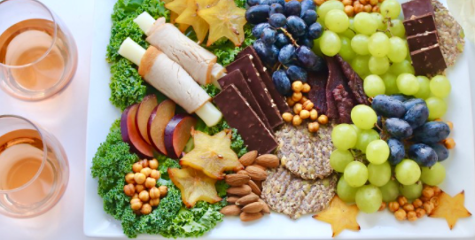
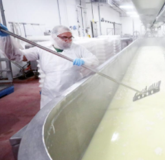
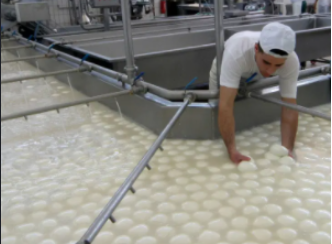

Specialty Cheese
Overview of Specialty Cheese
- Fresh Soft
- Fresh Firm
- Soft
- Semi Soft
- Semi Hard
- Hard
- Semi Firm
- Firm
- Blue
Specialty Cheese Main Ingredients
- Milk
- Salt
- Cultures
- Enzymes
- Rennet
Top 5 Specialty Cheese Producers in the United States
- Wisconsin
- California
- Idaho
- New Mexico
- New York


The Production Process
- The first step in the cheese making process begins at the farm. The milk quality of the cows is one of the most essential components to high quality cheese.
- The next step is separating the curd from the why. The amount of different cheeses you can make based off this simple step is astounding.